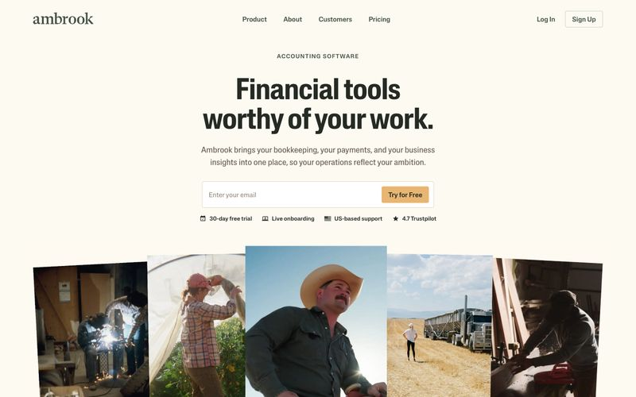
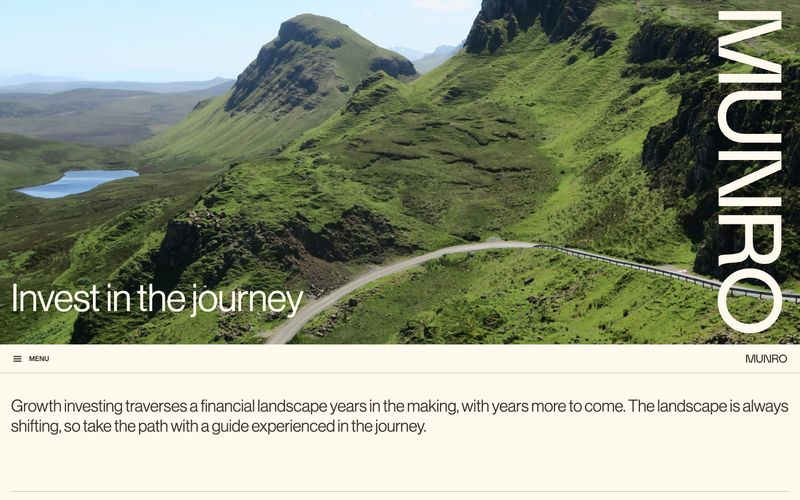
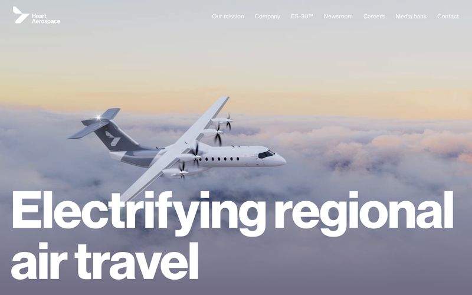
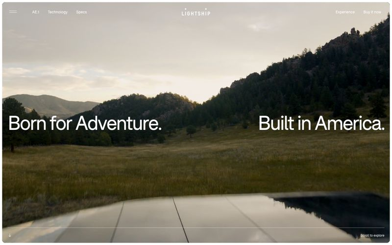
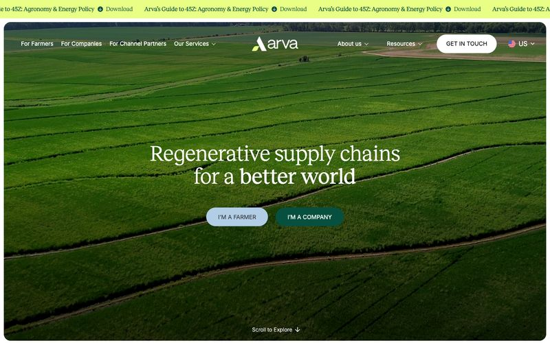

Ambrook
"harvest ledger on butcher paper"
The position: the operating company for working land
Financial software for American farms and ranches. The closest living business analogue to SFN anywhere in the gallery: serious money, working land, credibility through warmth rather than chrome. Documentary photography of unposed people in full sun — exactly the photography SFN actually has.
Why for SFN: the register says "we run farms and keep books", which is SFN's entire pitch to a funder. Its rule that industry illustrations are monochrome line art gives us a custom graphic layer with no stock anything.
Risk: the quietest of the five. Warmth, not boldness.
Real tokens
Canvas parchment #fcfaf1, never pure white
Action honey amber #e8b672, the sole CTA colour
Type Lateral (custom humanist sans), headlines at weight 500 not 700,
11–68px; uppercase eyebrow labels at wide tracking
Shape 3.75px buttons, 7.5px cards
Imagery documentary, unposed, full sun; line-art illustration in ink
Munro Partners
"editorial broadsheet in a green landscape"
The position: fluent in capital
A growth-equity investor. Warm cream canvas, everything trimmed in a single warm dark brown that reads as ink, hairline rules instead of cards, full-bleed landscape photography, and a 68px display headline at weight 400 that whispers against the imagery instead of shouting.
Why for SFN: the audience is a funder writing a seven-figure cheque, and this is the register those people already trust. It makes SFN read like an investable operation, not an appeal. The whisper-weight headline over African land photography would be genuinely distinctive.
Risk: could read financial rather than warm if the photography doesn't carry the humanity.
Real tokens
Canvas cream #fff9ee; ink is warm brown #3f322a, never black
Action deep teal #004e4e, one per view, everything else forbidden
Type Neue Haas Grotesk; display 68px at weight 400 — the whisper is the
signature; body 14px/1.43
Shape 2px near-square buttons; 15px only on images; 1px hairlines, no cards
Imagery full-bleed landscape
Heart Aerospace
"industrial white gallery above the clouds"
The position: frontier infrastructure
Electric regional aircraft. Monumental typography over full-bleed photography and almost nothing else: no cards, no shadows, no rounded corners, no filled buttons. Type is the subject, photography is the environment, negative space is the luxury.
Why for SFN: this is the boldness you responded to in Zipline, but light, disciplined and specified as a system rather than a vibe. It frames SFN as infrastructure at continental scale — the "feed every generation" ambition — and it is unmistakably not an NGO template.
Risk: the most demanding of photography, and restraint this severe can read cold if the copy doesn't carry warmth.
Real tokens
Canvas white, with a stratosphere #716e85 → white gradient
for atmospheric sections
Action outlined ghost buttons in jetstream blue #001489 — filled buttons
never exist
Type Neue Haas Grotesk Display at 156px weight 600, -0.02em — the
signature scale
Shape radius 0 everywhere; partner logos always monochrome
Imagery full-bleed, atmospheric
Lightship
"open meadow in morning light"
The position: the film of the land
Electric campers. A photography-first editorial system where the UI is deliberately invisible: one geometric sans with tight negative tracking, hairline borders, pill navigation, warm cream canvas, and cinematic full-bleed imagery doing all of the storytelling.
Why for SFN: SFN's strongest asset is that the work photographs beautifully — real people lifting real onions in full sun. This system is built to let exactly that carry the site, with short declarative headlines over it. The drone film slots straight in.
Risk: needs the full shot list commissioned before it sings; with three photographs it would feel thin. You once said you didn't want "a photography website" — this is the option that most is one.
Real tokens
Canvas warm cream #faf6ef
Accent ember orange #fa5c40, as a rare surface strip, never a button fill
Type F37 Bolton (sole face), 12–75px; -0.05em above 48px, -0.03em below —
the tracking is non-negotiable
Shape 20px on framed photographs, 100px pills on interactive; heroes
full-bleed at radius 0
Imagery cinematic landscape, 100px section gaps
Arva
"regenerative supply chains for a better world"
The position: sector-native pastoral editorial
Regenerative agriculture supply chains — the only candidate in SFN's actual sector. Warm cream canvas, deep forest green anchor, an editorial serif (Reckless) against a neutral sans, quilted pastel content cards like fields seen from altitude, and one vivid lime marquee as the single high-energy accent.
Why for SFN: it solves warmth and seriousness at once — a printed- magazine feel over working agriculture. The quilted-fields card language is a ready-made way to show plots, schools and cycles. You've responded to this lineage before.
Risk: the busiest system of the five; needs discipline or it tips decorative. Reckless must be licensed or substituted.
Real tokens
Canvas bone #f1efdf, never pure white
Anchor forest ink #07503f fills nav and dividers
Accent vivid lime #e8fe85, marquee only — scarcity is the rule
Type Reckless serif 24–57px display against Inter 12–90px; serif/sans
tension is the voice
Shape 100px pill on every button; pastel cards rotate sky/peach/sage/bone
as a quilted series
Imagery full-bleed above the fold